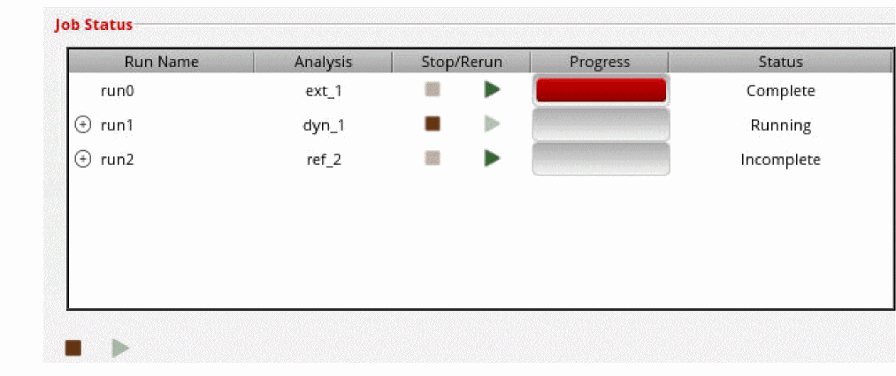
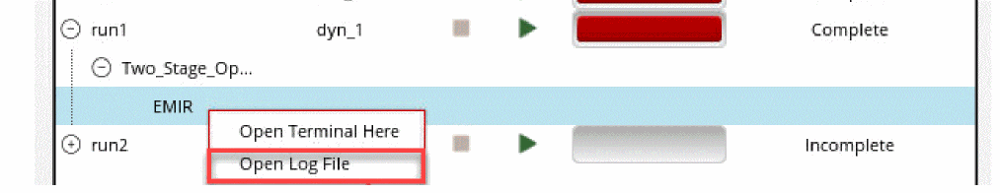
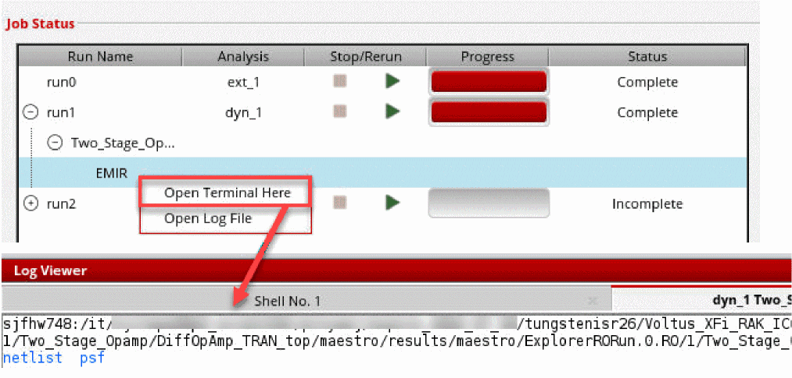

Running EM-IR Analysis
- Click the Run tab from the task pane.
-
In the Job Status section, click the Start Run (
) button next to the analysis run (dyn_1).
The simulation name (run1 in this image) has a tree view structure that can be expanded to view the corner names.
After the analysis run is complete, the status changes from Running to Complete. After the simulation finishes, ViVA may open. To prevent ViVA from opening, open ADE Explorer, select Results > Printing/Plotting Options, and set Plotting Option to None.
You can also click “Start All Runs (
) ” to sequentially run parasitic extraction and post-layout simulation in a single step. You cannot add or edit the analysis and extraction setups while running all tasks.
-
You can check the log file for the simulation run from within the Voltus-XFi interface by right-clicking the analysis run name and selecting the Open Log File option.
 -
You can open the simulation output directory from within the Voltus-XFi interface by right-clicking the analysis run name and selecting the Open Terminal Here option.
The 'netlist' directory contains all the input files that are required by the simulator. The 'psf' directory contains all the output results from the simulator.
The psf directory includes the following files:-
Voltus-XFi log file (
input.emirtap.vfilog) -
Time window file (
input.emirtap.bin_time_window) -
EM-IR configuration file (
input.emirtap.conf) -
Result database (
input.emirtap.emir0.wdb) -
Simulation result database (
input.emirtap.emir0_bin) -
Electromigration analysis results (
input.emirtap.rpt_em) -
Voltage drop results (
input.emirtap.rpt_ir) -
Pin current results (
input.emirtap.rpt_pin) -
Power gate report (
input.emirtap.rpt_pwg)
-
Voltus-XFi log file (
Related Topics
Return to top